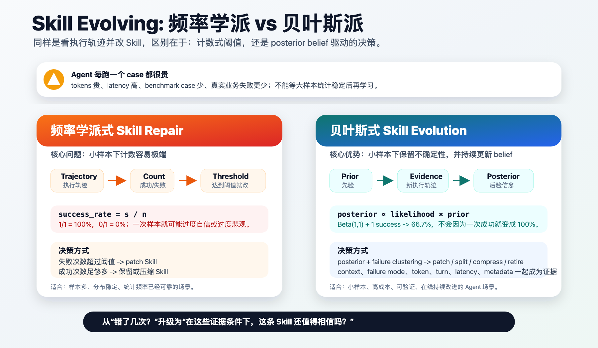

为什么 Bayesian-Agent 要用贝叶斯建模 Skill 进化¶
其实目前方法的本质也还是根据执行轨迹，看错哪里了去针对性地改 Skill。那么，我们采用贝叶斯方式建模这个过程的优势在哪里？贝叶斯对比频率学派的核心优势，在 Bayesian-Agent 框架下体现出来了吗？
这是一个很重要的问题。因为如果一个方法最后只是“错了就 patch”，那它不需要叫 Bayesian。它最多是 failure-driven prompt repair。
Bayesian-Agent 的核心主张不是“贝叶斯让 Skill 自动神奇变好”，而是：
Agent 每跑一个 case 都很贵：tokens 贵、latency 高、benchmark case 少、真实业务失败更少。在样本少、每个样本很贵、不能等到大样本统计稳定时，贝叶斯可以把先验、不确定性和新证据统一起来，做更稳健的决策。
也就是说，贝叶斯在这里解决的不是“如何写一句更强的 prompt”，而是“在稀疏、昂贵、连续到来的 verified trajectories 里，如何决定一条 Skill 是否可信、是否该改、怎么改、何时压缩或废弃”。

一、先承认：表层动作确实是看轨迹改 Skill¶
Bayesian-Agent 的外在行为可以被简单描述成：
这和很多 self-improving agent、prompt repair、SOP refinement 方法看起来很像。
例如在 SOP-Bench 中，如果 agent 算出了正确决策，但没有把目标 CSV 行的 expected_output 写成非空值，那么系统会把它归类为：
如果这种失败重复出现，就会生成类似这样的 patch：
After writing, re-read test_set_with_outputs.csv and confirm the target row's expected_output is non-empty.
If the target cell is empty, write the computed raw category string before finishing.
所以，表层上看，它确实是在“看错哪里，然后针对性改 Skill”。
区别在于：普通 repair 只留下了一个 patch，而 Bayesian-Agent 还留下了一份可持续更新的 belief state。
二、频率学派式 repair 的问题：小样本下太容易极端¶
最朴素的频率估计是：
如果一条 Skill 第一次运行成功：
如果第一次运行失败：
这在大样本、稳定分布下没有问题。但 Agent Skill 进化往往不是这种环境。
现实里更常见的是：
- 一个 benchmark 只有几十个 case。
- 真实业务中的失败案例更少，而且很珍贵。
- 每次 agent 执行都要花 token、工具时间和等待成本。
- 同一个 failure mode 可能只出现一两次，但已经足够提示一个可复用教训。
- LLM agent 有随机性，一次成功不代表 Skill 稳定，一次失败也不代表 Skill 完全无效。
在这种场景下，如果只用频率计数，很容易出现两种错误：
| 小样本观测 | 频率式结论 | 问题 |
|---|---|---|
| 1 次成功 | 成功率 100% | 过度自信，可能过早压缩或固化 Skill。 |
| 1 次失败 | 成功率 0% | 过度悲观，可能过早废弃或过拟合 patch。 |
| 1 次罕见失败 | 立即 patch | 容易把偶然噪声写进 Skill。 |
| 2 次同类失败 | 只是计数 +2 | 没有表达“失败正在聚类”的不确定性变化。 |
频率学派当然也可以加平滑、阈值和置信区间。但一旦我们开始说“不要因为一次失败就过度反应”“要保留先验”“要表达不确定性”“要根据 evidence 更新 belief”，我们其实已经在靠近贝叶斯思想。
三、贝叶斯带来的第一个优势：先验让小样本不极端¶
在 Bayesian-Agent 中，最简单的可选 backend 是 Beta-Bernoulli posterior。
设一条 Skill h 的真实成功概率是 p_h：
当观察到 s_h 次成功和 f_h 次失败后：
后验均值是：
如果用一个均匀先验：
那么一次成功后：
一次失败后：
这和频率估计的 100% 或 0% 很不一样。
贝叶斯不是不相信新证据，而是不让单个样本把 belief 推到极端。这正适合 agent skill evolution，因为一次 trajectory 往往既昂贵，又带噪声。
四、贝叶斯带来的第二个优势：不只看成功率，还看“在什么条件下成功”¶
只用 Beta-Bernoulli 还不够。因为 Skill 的可靠性通常不是一个全局数值。
一条 Skill 可能在 SOP-Bench 里很好，但在 Lifelong AgentBench 里不行。也可能在低 token 任务上很好，但在高 token、长 turn、慢工具路径里变得不可靠。
所以 Bayesian-Agent v0.5 默认使用的是 feature-conditioned categorical Bayesian Evidence Model。
对一条 Skill hypothesis h_k，每条执行轨迹会形成一条 evidence：
其中：
当前实现里的 x_i 包括：
| Evidence feature | 含义 |
|---|---|
context |
任务族、benchmark 或 harness 场景。 |
failure_mode |
可复用的错误模式，比如 left_expected_output_blank。 |
token_bucket |
本次执行落在哪个 token 成本区间。 |
turn_bucket |
本次执行用了多少交互轮次。 |
latency_bucket |
本次执行耗时落在哪个延迟区间。 |
metadata.* |
harness 或 benchmark 提供的短标量诊断信息。 |
模型估计：
这里的 product_j 表示对所有 evidence features 连乘。
这个公式的含义是：
在 Skill h_k 下，
如果我观察到某个 context、failure mode、token bucket、turn bucket、latency bucket 和 metadata，
那么这条轨迹更像 success 还是 failure？
这比频率计数多了一层关键能力：它不只是问“这条 Skill 总体成功率是多少”，而是问“这条 Skill 在当前证据条件下是否可靠”。
五、贝叶斯带来的第三个优势：把 patch 决策变成 posterior-driven policy¶
如果没有 belief state，rewrite policy 往往只能写成硬规则：
这些规则有用，但缺少解释力。
Bayesian-Agent 仍然保留了保守阈值，因为 v0.5 的目标是可审计、可实现，而不是把所有东西都包装成复杂推理。但这些阈值不是孤立存在的，它们围绕 posterior belief 工作。
当前默认 policy 的思想是：
| Policy | 当前含义 |
|---|---|
explore |
没有足够 verified evidence，或者 posterior 仍不确定。 |
patch |
同一 failure mode 至少出现 2 次，说明失败开始聚类。 |
compress |
观测足够多，且 posterior success 较稳定，可以压缩 Skill 降低 token。 |
split |
同一 Skill 跨多个 context，可能需要拆分成更细 SOP。 |
retire |
失败证据足够多，posterior 显示该 Skill 明显不可靠。 |
这样一来，Skill evolution 从：
变成：
这就是 Bayesian-Agent 和普通 prompt repair 的本质差异。
六、什么时候我们的方法更适用¶
Bayesian-Agent 最适合的不是无限大数据、离线稳定分布，而是 agent 工程里更常见的小样本、高成本、在线更新场景。
| 场景 | 为什么适合 Bayesian-Agent |
|---|---|
| 小样本 benchmark | case 少，不能等频率统计稳定。 |
| 真实业务失败稀缺 | 每个失败都珍贵，需要最大化 evidence 利用率。 |
| 每次执行成本高 | token、latency、API、工具调用都贵，不能大量试错。 |
| failure mode 可复用 | 同类错误可以转化成后续 Skill/SOP patch。 |
| 需要增量修复已有 Agent | 可以读取 GA、Claude Code 或其他 harness 的失败轨迹，只修失败部分。 |
| 需要跨 harness 迁移 | posterior 绑定 normalized trajectory evidence，而不是某个框架内部状态。 |
| 同时关心准确率和效率 | token bucket、turn bucket、latency bucket 都进入 evidence model。 |
| 任务分布会持续变化 | posterior 可以随新轨迹在线更新，而不是固定一版 prompt。 |
所以更准确的定位是：
中文可以说：
七、什么时候它不一定更好¶
贝叶斯不是魔法，也不是所有 Agent 场景都需要 Bayesian-Agent。
| 场景 | 为什么优势有限 |
|---|---|
| 样本极多且分布稳定 | 频率估计已经足够可靠。 |
| 没有 verifier | 没有可靠 success/failure evidence，posterior 没有根基。 |
| failure 完全随机 | 如果失败模式不可复用，改 Skill 意义有限。 |
| 问题需要参数训练 | 应该考虑 fine-tuning、RL 或继续预训练，而不是只改推理环境。 |
| 一次性任务 | 如果不会遇到相似 case，Skill evolution 的长期收益有限。 |
这也解释了 Bayesian-Agent 的边界：它不是替代预训练、微调或 RL 的参数训练方法，而是补足 inference-time learning 的工程层。
八、这套框架里“贝叶斯”已经体现在哪里¶
当前实现中，贝叶斯不是一个口号，而是落在几个具体对象上：
| 组件 | 贝叶斯体现 |
|---|---|
TrajectoryEvidence |
把每次 verified run 规范成可更新证据。 |
BayesianSkillRegistry |
为每条 Skill/SOP 维护 posterior belief state。 |
BetaBernoulliState |
可选的全局 success/failure posterior。 |
CategoricalBayesState |
默认 feature-conditioned evidence likelihood。 |
RewritePolicy |
根据 posterior、failure clustering 和 evidence coverage 决定 rewrite action。 |
skill_evolution artifacts |
保存每个 task 前后的 Skill context、posterior audit 和 belief snapshot。 |
不过也要诚实说明：v0.5 还不是完整的 Bayesian reasoning system。
已经实现的是：
还在 roadmap 中的是：
多 Skill hypothesis model selection
Thompson sampling 式 Skill selection
Bayesian decision theory 下的 cost-aware rewrite
层级贝叶斯建模不同 benchmark / harness / task family
贝叶斯网络建模 failure causality
这也是我们应该对外准确表述的地方：当前版本已经把“经验修补”推进到了“证据驱动的 posterior belief update”，但不会把它夸大成完整贝叶斯智能体。
九、最终总结¶
普通 self-evolving agent 的逻辑是：
Bayesian-Agent 想做的是：
频率式 repair 关注的是“出现了几次”。Bayesian-Agent 关注的是：
这就是贝叶斯在 Bayesian-Agent 框架里的核心价值。